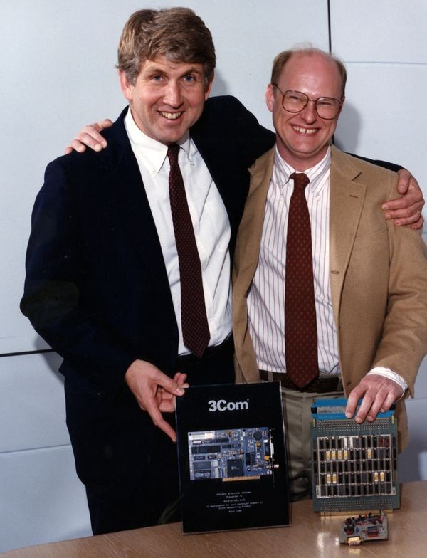
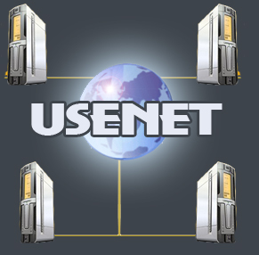

1971 - CYPNET
Implementado por Ray Tomlinson, fue el primer sistema de correo electrónico, integrado en ARPANET.
1973 - Ethernet
Robert Metcalfe y David Boggs, conectaron dos ordenadores Alto con cable coaxial a 2,94 Mbps en el Xerox Palo Alto Research Center, mediante una red deniminada Ethernet.
1979 - USENET
Fue un sistema de discusión en línea que se convirtió en uno de los primeros medios para la interacción en comunidades en línea. Creado por Tom Truscott, Jim Ellis y Steve Bellovin.
